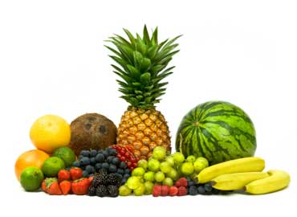

| Fruits are generally high in fiber, water, vitamin C and sugars, although this latter varies widely from traces as in lime, to 61% of the fresh weight of the date. Fruits also contain various phytochemicals that do not yet have an RDA/RDI listing under most nutritional factsheets, and which research indicates are required for proper long-term cellular health and disease prevention. Regular consumption of fruit is associated with reduced risks of cancer, cardiovascular disease (especially coronary heart disease), stroke, Alzheimer disease, cataracts, and some of the functional declines associated with aging. |
 |